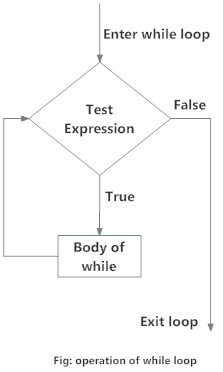

Chapter 2 Conditionals and Loops
2.1 Setup
1. Download data.
We will be using a dataset containing citation and alternative metrics for articles published in the PLOS family of journals between 2003 and 2010. The data set was compiled by Priem et al 2012 (publication).
Download the data onto your computer from this dropbox link and move it into a directory on your computer that makes sense.
2. Read in data into R.
2.2 Conditional statements
Decision making is an important part of programming. This can be achieved in R programming using conditional statements such as if and if...else.
if
The syntax of an if statement is:
## [1] "positive number"if…else
The syntax of an if…else statement is:
The else part is optional and is only evaluated if test_expression is FALSE. It is important that the else word be in the same line as the closing brace of the if statement.
## [1] "positive number"Nested if…else statements
You can have more than two test expressions:
x <- 0
if (x < 0) {
print("negative number")
} else if (x > 0) {
print("positive number")
} else {
print("zero")
}## [1] "zero"EXERCISE 2.1
Write a simple if…else statement to check if 5 is an odd number and if it is print “I am odd”, otherwise print “I am even”.
2.3 Loops
Conceptually, a loop is a way to repeat a sequence of instructions under certain conditions. They allow you to automate parts of your code that are in need of repetition.
for loop
The easiest and most frequently used loop in R is a for loop. Here is a demonstration of using loops.

## [1] 2015
## [1] 2016
## [1] 2017
## [1] 2018## [1] "the year is 2015"
## [1] "the year is 2016"
## [1] "the year is 2017"
## [1] "the year is 2018"while loop
In contrast to a for lop, while loops are used to loop until a specific conditional statement is no longer true.

## [1] 1
## [1] 2
## [1] 3
## [1] 4
## [1] 5EXERCISE 2.2
Challenging. From the PLOS journal publication data we read into R above, here is a plot showing the impact factor according to the F1000 (Faculty of 1000) versus the number of times the PDF was downloaded.

Using this dataset, write a for loop containing an if...else statement to change the f1000Factor column into categorical variable with two levels: high impact and low impact.
Do this by translating the following sentence into R code: for every element in the f1000Factor variable, if the value is greater than zero, change it to “high_impact”, otherwise, change it to “low_impact”.
Bonus. Create a box plot (like the one below) showing the number of PDF downloads for high versus low impact articles.